Podium is:
...that runs on:
...with input devices:
...and practice tools:
...url:
https://studiop5.org/podium
Welcome to Podium! This Quick Start guide will get you up and running in minutes. For detailed information on any topic, follow the chapter references throughout.
Launch Podium at https://studiop5.org/podium. You'll see a circular menu on a gray background. Tap the inner ring's "Score" cell, then tap the outer ring's "Open" cell. Drag out from the Open cell to reveal the Open Panel. Select a storage location (Local, Google Drive, Dropbox, OneDrive, or Recent) and tap a PDF score file to open it.
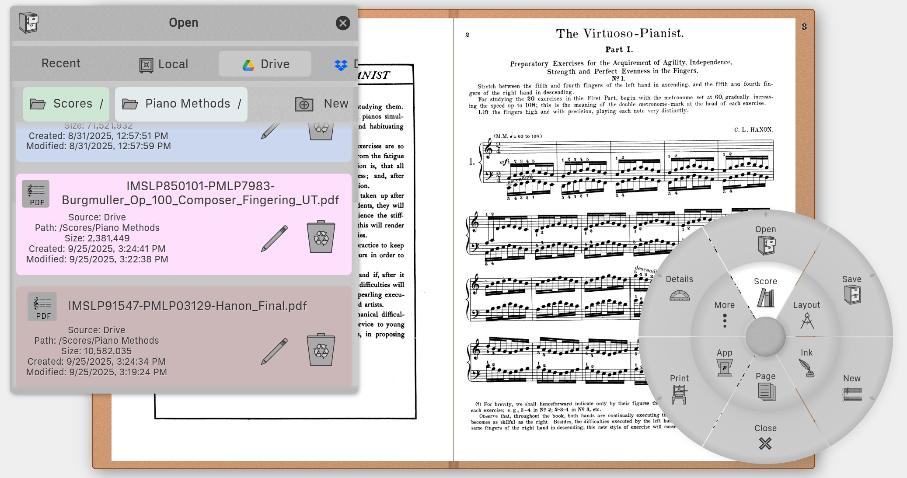
See Chapter 2: Score Ring for complete file management details
Once your score is open, tap the inner ring's "Layout" cell. The outer ring will show 4 layout options:
Tap any layout to activate it. Use two-finger pinch-zoom on the score to resize and reposition.
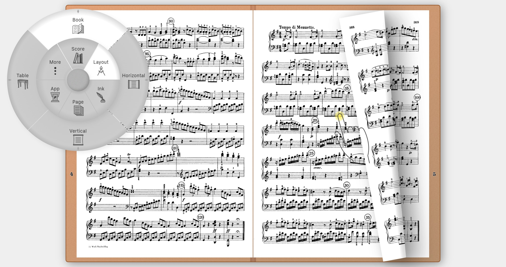
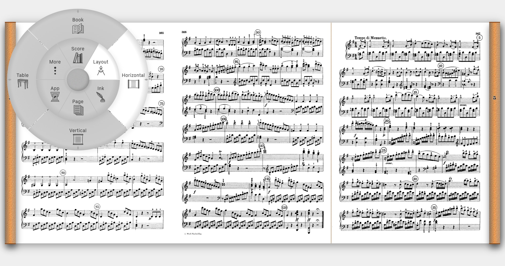
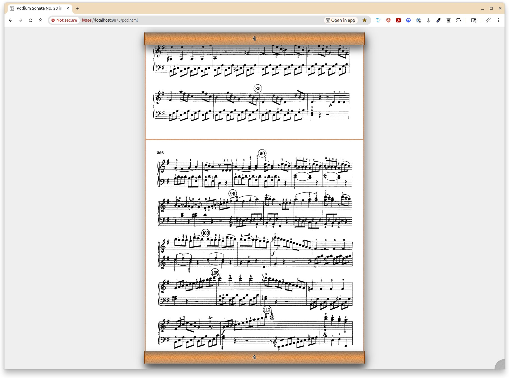
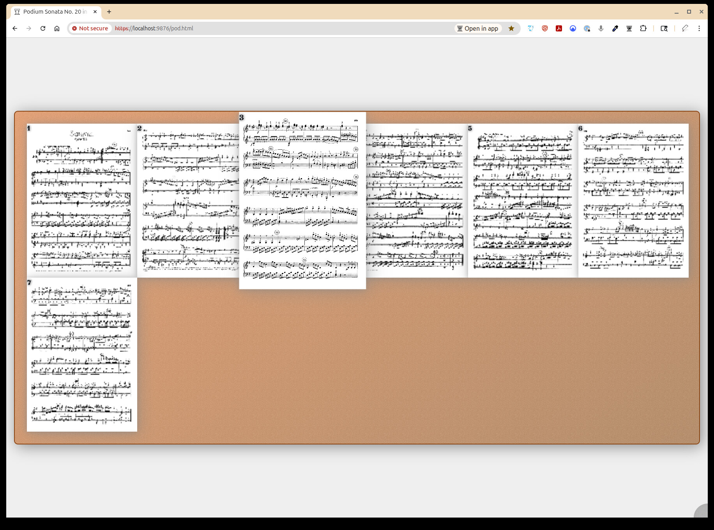
See Chapter 3: Layout Ring for detailed layout controls and settings
Navigation: Swipe or fling pages to turn them. Long-press anywhere on the background to summon the menu. To hide the menu, long-press the menu's center grip or fling it to any corner or edge. Swipe left↔right on the background to enter full-screen mode.
Annotations: Tap the inner ring's "Ink" cell to add annotations. The outer ring shows tools for:
Activate any tool, then tap or drag on the score to use it. Safety tip: Most Ink tools automatically deactivate after a few seconds of inactivity, so you won't accidentally stay in annotation mode when navigating.
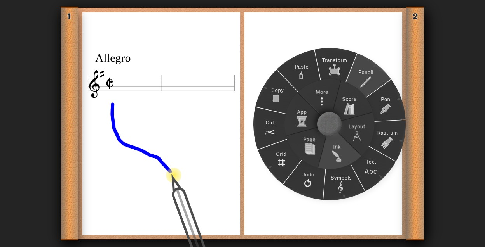
See Chapter 4: Ink Ring for complete annotation tools and techniques
The menu has three parts:
Both rings can be rotated by dragging them in a circular motion.
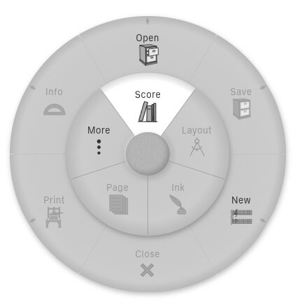
See Chapter 1: Interface Basics for complete interface details
Cells with small diamond-shaped pointers (like compass points) contain hidden panels. Drag out from these cells to reveal the panel. Move panels by dragging their textured header. Hide a panel by flinging it from the header, or close it with the X button.
Tap the inner ring's "Score" cell, then tap "Save" in the outer ring (or drag out from Save to choose a new location/name). Your annotations and settings are saved within the PDF file.
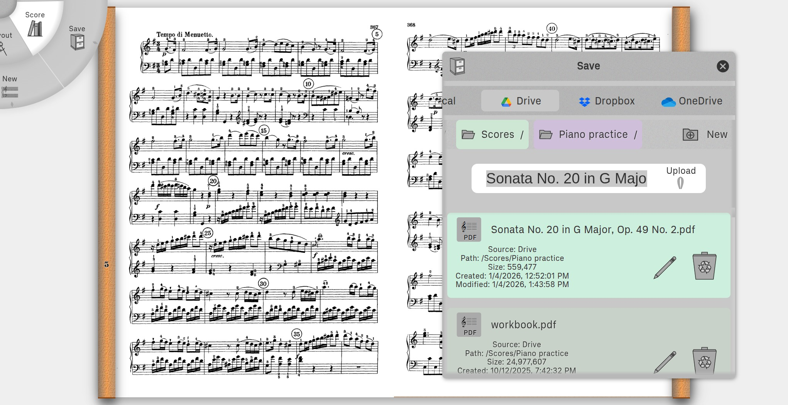
See Chapter 2: Score Ring for saving, printing, and score details
Need to add, remove, or rearrange pages? Tap the inner ring's "Page" cell. The outer ring provides:
Safety tip: Like Ink tools, Page tools auto-deactivate after a few seconds of inactivity.
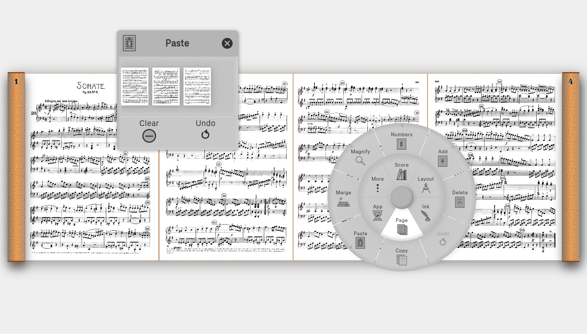
See Chapter 5: Page Ring for complete page management features
Tap the inner ring's "More" cell to access a suite of musician's practice tools. These panels can be detached from their headers and positioned anywhere on screen for convenient access while practicing:
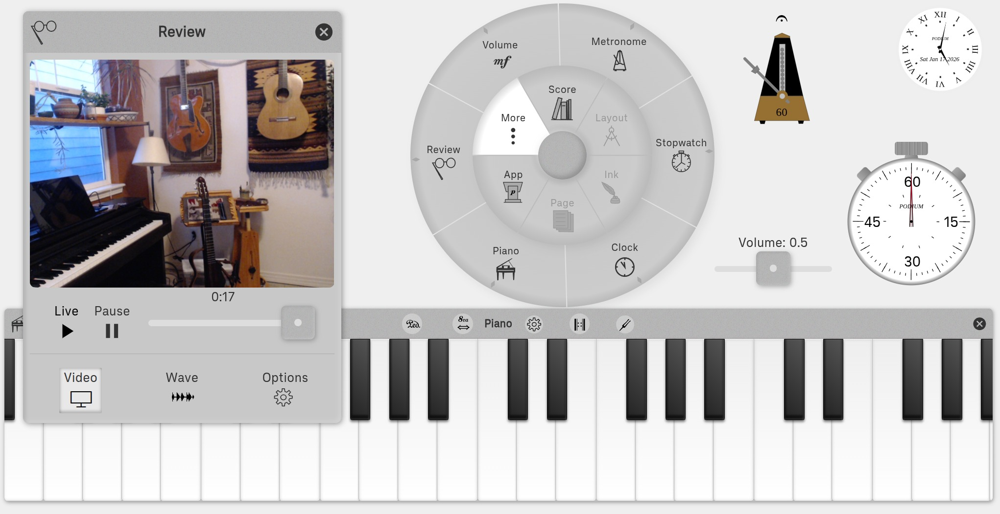
See Chapter 6: More Ring for detailed information on each practice tool
Podium works with footpedal page turners! Configure arrow key behavior in the Page Ring's Numbers panel to map pedal presses to page turns or bookmark navigation.
See Chapter 5: Page Ring - Numbers for keyboard shortcut configuration
Tap the inner ring's "More" cell, then tap "Help" in the outer ring to access documentation, open source credits, and factory reset options.
That's it! You're ready to use Podium. Explore the chapters below for in-depth information on each feature.
Podium has four interface elements:
Sandpaper texture: Notice the sandpaper-like texture on the menu's center grip, panel headers, and sliders. Drag any textured area to move that element. (Mouse users: click-drag instead.)
Pinch-zoom (universal): Use a 2-finger pinch-zoom anywhere on the Menu, Panels, or Layouts to move and resize them. Pinch-zoom on the Background to resize everything at once.
Mouse alternative: Hold Ctrl and drag to move. Hold Ctrl and scroll the mouse wheel to resize. For greater accuracy, hold Ctrl+Shift while scrolling.
On launch, Podium displays a circular menu on a gray background. The menu has three parts:
Tap any cell to activate it. This determines which cells appear in the outer ring. Only one inner ring cell can be active at a time. Active cells have a white background.
Tap any cell to activate it and trigger its action. Only one outer ring cell can be active at a time.
Unavailable cells are grayed out. On launch, only the Score and More cells (inner ring) and Open and New cells (outer ring) are available.
Rotating rings: Drag either ring in a circular motion to rotate it. This is helpful when the menu is positioned near a screen edge and some cells aren't visible.
Menu cells with small diamond-shaped pointers contain hidden panels. To open a panel, drag out from its cell onto the background.
Moving panels: Drag from the textured header, or use pinch-zoom anywhere on the panel.
Closing vs. hiding:
Many panels use sliders to adjust values. For more precision, drag the slider to approximately the right value, then (without lifting your finger) drag up or down. The farther you drag, the more precise the slider becomes.
A floating window displays the current value, positioned so your hand won't block it.
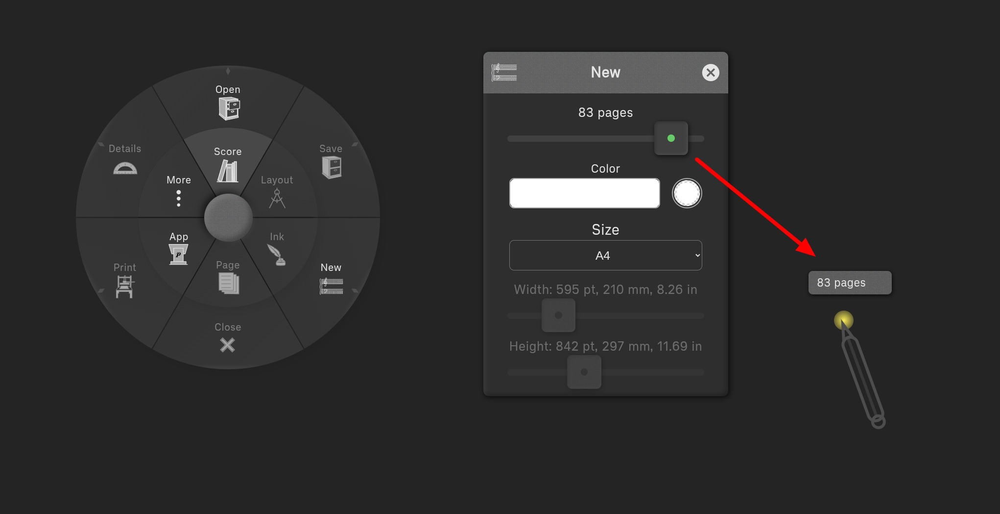
Manage scores stored as PDF files.
Most of the Score Ring's cells are grayed out until a score is Opened, or until a New, empty score is created.
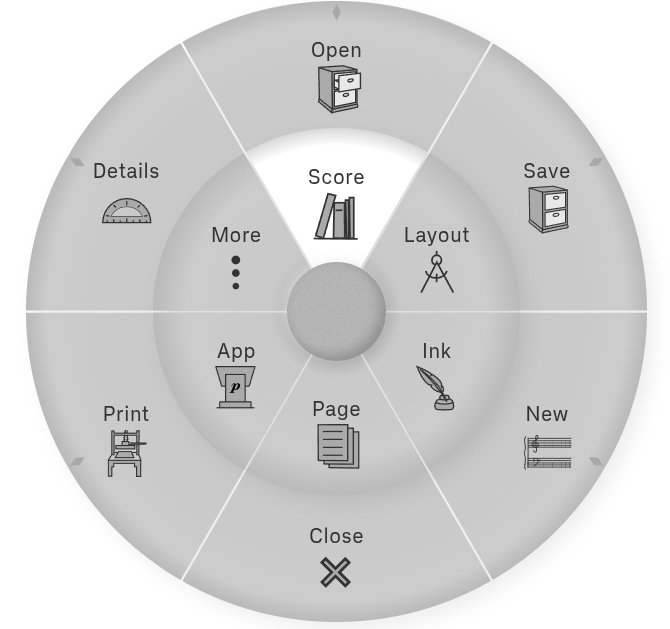
Open and save PDF score files.
Both Open and Save Panels work with locally attached storage or with cloud storage services: Google Drive, Dropbox, or Microsoft OneDrive. Though these services require accounts, they all offer free subscription tiers.
In either Panel, tap any tab on the tab strip to select a storage service. Drag the strip left↔right to access other tabs.
Each Panel displays a scrolling list of PDF file and folder entries. Drag or fling that list up/down to scroll the contents. The list is alphabetical A-Z, with directories grouped after files.
Tap a folder entry to repopulate the list with that folder's contents. Below the tab strip is the Folder Path strip: it shows the current folder path. Tap a folder name or icon to load the corresponding folder. Tap New to create a new folder.
Each entry in the file/folder list has icons for renaming or deleting. There is no built-in copy/paste functionality: instead, open the file, save it to the desired location, then delete the original.
Tap a PDF score file in the Open Panel to download and display that score.
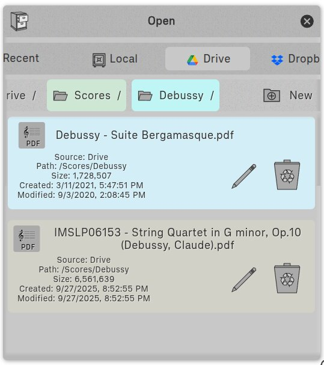
The Menu's Open cell is also tappable. With a score already open, tapping the Open cell reloads the current file (i.e. "revert to saved").
Recent Tab: The Recent tab provides quick access to the 20 last visited PDF score files. This list is stored in the browser's local storage, so it will have unique contents for each device/browser combination.
The Save Panel has a widget for editing the file name. Inside the widget there is an Upload button: tap it to save the current score, with the given name, to the selected folder.
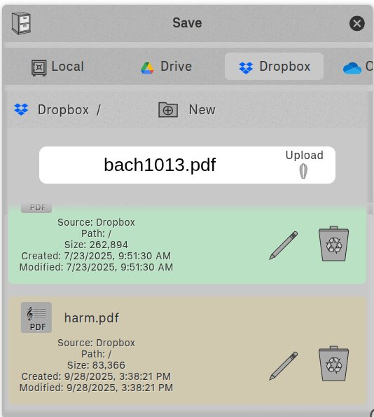
The Menu's Save cell is also tappable. With a score open, tapping the Save cell saves the current file to its original location, bypassing the Save Panel.
Create new, empty scores.
New empty scores are created by activating the New cell. The newly created score is made using the number of pages, size, and background color and opacity specified in the New Panel.
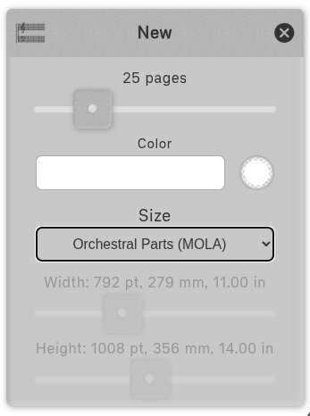
The New Panel allows you to configure:
Print the current score with or without annotations.
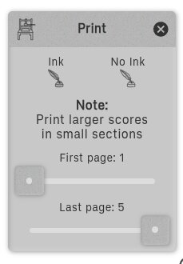
In Podium, user-created annotations are called Ink. The Print Panel allows you to configure printing options:
The Info Panel displays comprehensive information about the currently open score.
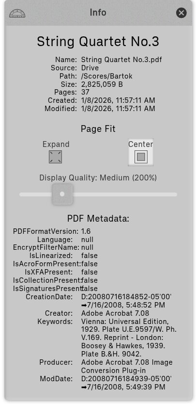
Metadata: The panel displays metadata created by Podium (such as when the score was last modified) as well as any metadata from the original PDF file. This may include information about the score's provenance, such as the original author, creation date, and other document properties.
Page Sizing: In Podium, all pages in a score are displayed at the same size, though this is not necessarily the case for PDF files in general. By default, Podium sizes pages to match the largest page in the PDF and centers smaller pages within that rectangle. The Info Panel contains a radio button that determines how smaller pages are treated:
Display Quality: The panel allows you to configure display quality. Higher quality uses more memory but provides sharper rendering.
Determine how scores are displayed.
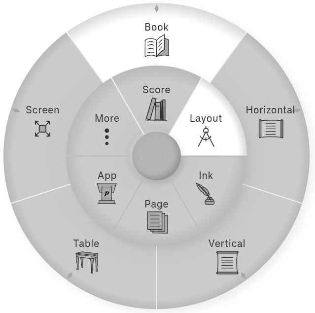
Podium implements 4 layout schemes:
The Screen cell toggles full screen mode. Alternatively, toggle full screen by swiping left↔right on the background.
By default, scores open with the last used layout on the current browser/platform or, if none, Book. The layout can be changed any time by tapping the desired cell. Whenever a score is saved, its last layout is stored as metadata in the PDF file, as well as in browser local storage.
Simulate a physical book.
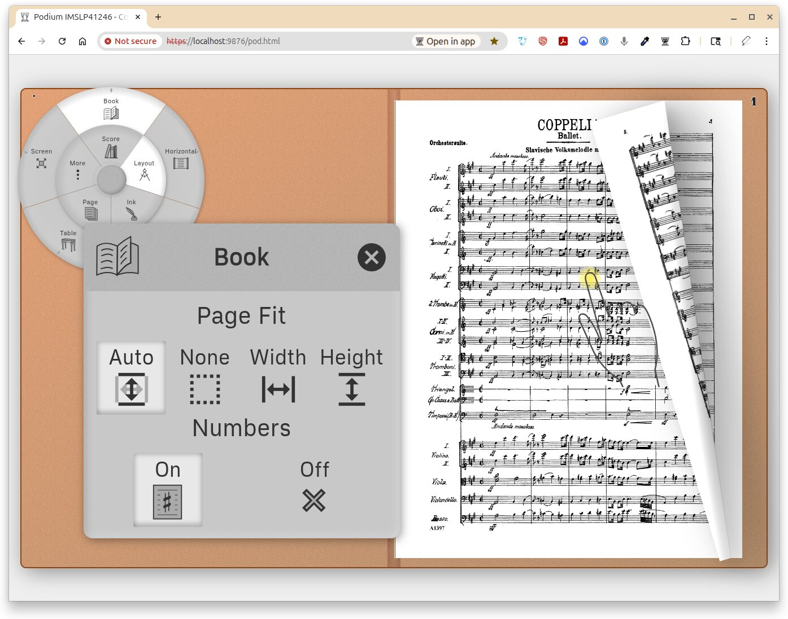
Turn pages by flinging (i.e. touch→drag→release, all in one quick motion), or by more deliberate dragging. When dragging, if you release without dragging past the central spine, the dragged page will flop back to its original position.
The Book Panel's Fit buttons determine the score's initial sizing:
After initial layout, use 2 fingers to pinch-zoom the score to move/resize as desired.
Page numbers can be turned on or off in the Book Panel. Current page numbers are shown at the left and right sides of the layout: drag the page number to quickly flip to other pages.
Bookmarks: Long-press on a page number to set a bookmark. Bookmarks appear as colored tabs on the book jacket. Press on any bookmark to jump there. Long-press on any bookmark to remove it.
Display the score as a continuous, horizontally-scrollable flow of pages.
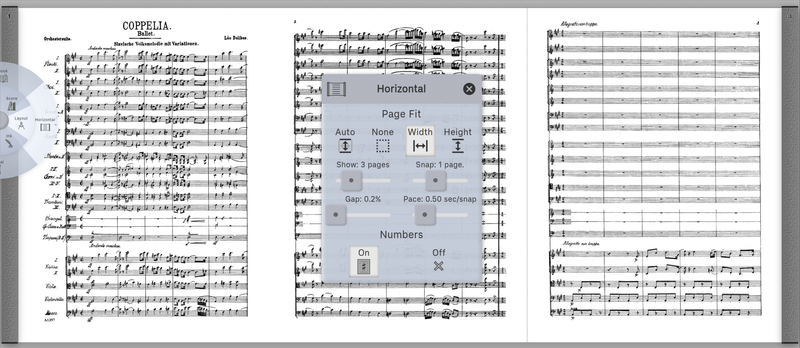
The Horizontal Panel's Fit buttons determine the layout's initial size:
After initial layout, pinch-zoom the score to resize/move as desired.
The Panel's Show: slider determines how many pages are visible at a time (from 1-8)
The Panel's Gap slider determines how much space to leave around each page, as a percentage of the page's width.
Scroll pages by dragging or flinging. The Panel's Snap: slider determines how many pages the scroll advances when a page is dragged or flung, ensuring that after a scroll, the leftmost and rightmost pages align with the left and right scrollers. Move the Snap: slider all the way to the left to completely disable page snapping.
Page numbers can be turned on or off in the Panel. Current page numbers are shown at the left and right sides of the layout: drag the page number to quickly scroll to other pages.
Bookmarks: Work the same as in Book layout (see above).
Display the score as a continuous, vertically-scrollable flow of pages.
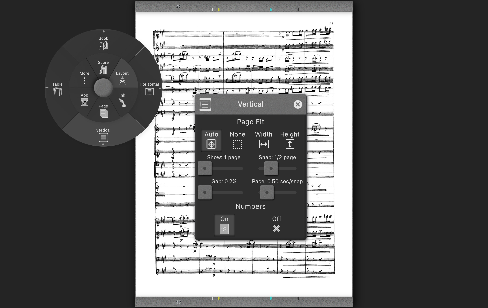
Settings for this layout function identically to the Horizontal Layout, see previous section.
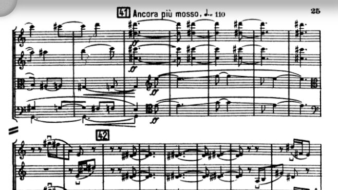
Display all pages of the score in a single table.
Convenient for adding or rearranging pages (using the Page Ring), or for quickly locating a page in a large score.
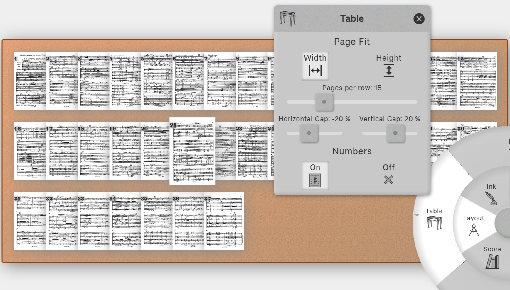
The Table Panel's Fit buttons determine the layout's initial size:
After initial layout, pinch-zoom the score to resize/move as desired.
The Panel's Pages per row: slider determines how many pages are shown in each row.
The Panel's Horizontal Gap slider determines the horizontal gap between neighbouring pages, as a percentage of the page's width. Setting this to a negative value causes the pages to be displayed overlapping each other, much like playing cards.
The Panel's Vertical Gap slider determines the vertical gap between neighbouring pages, as a percentage of the page's height. Setting this to a negative value causes the pages to be displayed overlapping each other, much like playing cards.
Page numbers can be turned on or off in the Panel.
Current Page: At any time, there is always a current page, drawn in higher resolution, slightly larger, and on top of all other pages. Click on any page to make it current. If you change to another layout, that layout will open at the current page.
Bookmarks: Long-press on a page to both make it current and toggle its bookmark state (add bookmark if none exists, remove bookmark if one already exists).
Add annotations to a score.
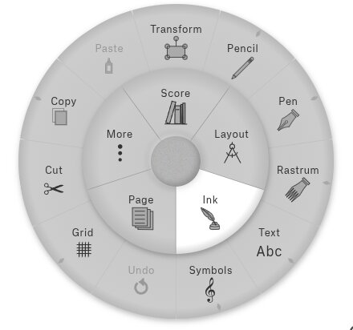
The Ink Ring's cells add annotation objects—staves, music symbols, text boxes, external images, and line drawings—to score pages. Tap any cell to activate it, then touch any score page to start drawing, to insert a symbol, image, or text box, or to perform any of the Ring's other actions: cut, copy, paste, grid, or transform.
Cut, Copy, Paste: Each annotation is an independent object that can be cut, copied, pasted, or transformed. To cut or copy an object, tap the Cut or Copy cell, then tap the target object on the score page. Then, if desired, tap the Paste cell, then tap the score page where you want to paste the previously Cut/Copied object.
Transform: while active, tapping on any existing annotation allows it to be selected, moved, rotated, or resized.
Pencil, Pen: line drawing tools. They are functionally identical; however, using their associated panels, they can be configured differently (color, line width, etc.) so that two different line types are immediately available for use.
Rastrum: A tool for drawing staves. More generally, a tool that draws a settable number of parallel lines, either horizontally or vertically. Consequently, the tool can also be used for medieval/renaissance staves, lute and guitar tablatures, chord diagrams, and so on.
Text: adds editable, multi-line text boxes to a page.
Symbols: adds individual music symbols. The Symbol cell's panel provides access to the several thousand music glyphs contained in the included Bravura music font.
Undo: Undo the last Ink Ring action. To undo an action, activate the undo cell, then tap the page to revert it to its state before the last action. To conserve memory, only the most recent 10 actions per page can be undone.
Grid: Displays a configurable drawing grid over the page.
Draw lines on score pages.
The Pen and Pencil Tools have identical functionality. Configure them independently: that way, two unique line-drawing styles will be readily available.
Tap on the color swatch in the Panel to invoke the Browser's native color chooser.
Tap on the interlocking circles in the Panel to reveal a slider that adjusts opacity.
Buttons on the bottom affect how the lines are drawn:
Add text boxes and music symbols to a page.
Symbols are arranged in groups as defined by the Standard Music Font Layout (SMuFL), see: https://w3c.github.io/smufl
Choose a Symbols Group from dropdown, then tap to select a symbol in the Preview. Note that most groups have many more symbols than are visible in the preview: drag left↔right to see them all.
Draw music staves.
In the physical world, a rastrum is a 5-pointed pen for ruling manuscript paper.
Podium's Rastrum draws multiple lines, with potentially multiple bar lines.
The tool is used by first touching the page, then dragging to define the rastrum object's length.
Set the style to L-R or T-B to draw horizontally or vertically. Once drawn, a rastrum object can always be rotated using the Transform tool.
Draw a 2-d guide grid for measuring and layout.
The Grid panel can be configured using Metric or Imperial (inch) units.
The Grid is 2-dimensional: adjust the X and Y Step sliders to change distance between grid lines.
To precisely position the Grid, first activate the Grid cell, then touch the score. Before releasing this touch, the position of the grid will follow your touch. Use this to align the grid with current features of the score page.
When Numbers is On, labels on the grid lines show the distance from the origin, marked with a "o".
Transform (move, resize, rotate) objects.
With the Transform cell activated, select an object by touching it, or by sweeping a rectangle around it.
Move the rectangular handles to resize/rotate the object:
Manage the pages and page numbers of a score.
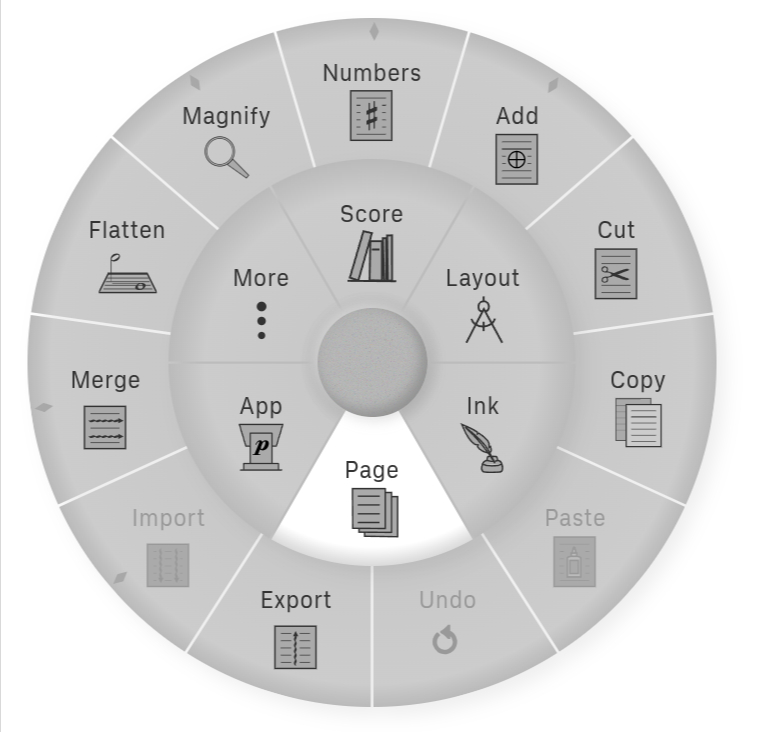
Add: Insert a new, empty page into the score, as configured by the Add Panel.
Cut, Copy, Paste: Activate the Cut (or Copy) cell, then touch the score page you wish to cut (or copy). Next, activate the Paste cell, then tap a score page. If the tap is on the left side of the page, the cut (or copied) page is inserted before the tapped page, else it is inserted after. (For Vertical Layout only: touch above the middle of the score page to insert before, or below the middle to insert after). Note that there is no Delete Page operation: instead, cut the desired page, then skip any subsequent paste.
Merge: A merge operation merges all Ink objects on the tapped page into the page itself. After merging, those objects can no longer be transformed: they are no longer treated as annotations, becoming instead integral parts of the score. Because this operation cannot be undone, you'll be prompted to confirm before the operation is committed.
Numbers: Drag out to reveal a panel that displays and configures score page numbers.
Show/set the score's effective current page number and configure how page numbers are counted.
The Effective page is the page number Podium displays in the layout's margins. This can be different from the page's 1-based sequence number. It is determined by combining the sequential page index (1st page, 2nd page, etc.) with these two settings:
First Page Number: the number to assign to the first non-preliminary page. Normally 1, but this often does not match the page number in the PDF, if any. For example, when sections of a larger score are converted to PDF, the first sequential page index in the PDF file might well display a page number other than 1. This is especially problematic when the PDF has a table of contents or other preliminary material, because the page references don't align with sequential page indices.
Preliminary pages: The number of preliminary pages (title page, contents, copyright, and other introductory material). Podium adopts the convention that such pages are displayed using lower-case Roman numerals.
The Numbers panel's First Page Number and Prelim (Roman) Pages sliders allow you to correct for such mismatches. To illustrate, the following layout shows an excerpt from Bach's first Cello Suite. Though the page's sequential indices are 1, 2, and 3, the first numbered page (i.e. the middle page in the layout) is numbered 69 in the PDF. To align the effective page numbers with the PDF, set the First Page Number value to 69, and set the "Prelim (Roman) Pages" value to 1. Accordingly, Podium displays the roman numeral i in the left pager, and the arabic number 69 in the right pager. The Panel reports the current page (i.e. the leftmost page) as Roman number i, and that this is sequential index number 1 out of a total page count of 37.
You can assign one shortcut to the up or right cursor arrow keys, and one to the left or down cursor arrow keys. Tap the appropriate button to determine if an up or right key press will navigate to the next page, or instead navigate to the next bookmark. Similarly, choose the appropriate button to determine if the left or down keys will navigate to the previous page, or navigate to the previous bookmark.
Configure the appearance of new pages added to the score.
To add a new page to a score, activate the Add cell, then tap on any page in the score. If the tap is on the left side of the page, the new page is added before the tapped page, else it is added after. (For Vertical Layout only: tap above the middle of the score page to add before, or below the middle to add after).
The Add Panel is used to configure the color and type of added pages:
Merge a score page's Ink annotations into the PDF.
In Podium, each page comprises two overlapping layers:
Activate the Merge cell, then tap a page to merge its overlay layer into the background layer. The operation converts all of the page's Ink objects into PDF objects, then incorporates these objects into the background layer [courtesy of the open-source pdf-lib library]. After that, these merged objects can no longer be selected or edited: they have become an integral part of the score's PDF content.
Merges are often very useful. For example, suppose you've used the Ink Ring's Rastrum tool to draw a staff on a page, and you want to use the Pencil and Pen tools to draw on that staff. The drawing will be much easier to edit if you first Merge the staff into the background layer. That way, you'll be able to perform edits without accidentally selecting and editing the staff itself.
Musician's toolkit.
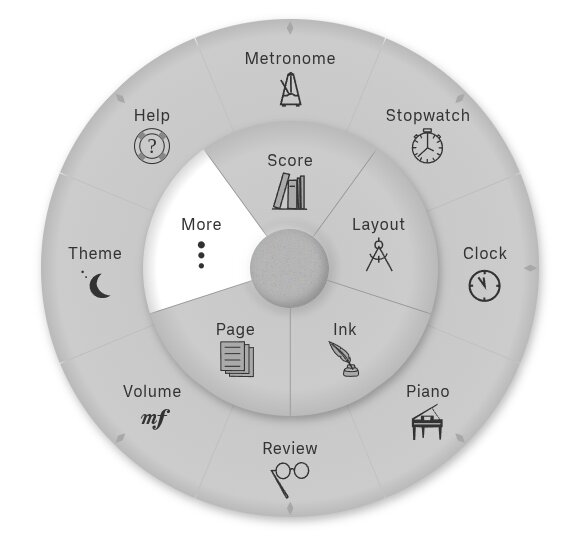
Simplify layout by detaching panel contents.
The graphical contents of the Metronome, Stopwatch, Volume, and Clock Panels can be detached from their panels by dragging onto the background.
Reposition detached panels by touch-dragging.
To hide a detached panel, simply fling it.
To close, drag the panel from the menu again, then tap the panel's x close button.
Animated metronome with simulated conductor.
Use the dropdown list to change graphic from traditional metronome to conducting pattern, with six different beat patterns.
While detached, long-press to play/pause.
While detached, tap on the metronome at the desired speed to set its tempo.
Timer for your practice sessions.
Playable piano keyboard with tuning and pitch detection features.
Drag left↔right from the 8va button to widen/narrow keyboard range to a maximum of F1-F6, or minimum of E3-A4.
Tuning Mode: Tap the Tuning Mode button to toggle tuning mode. When enabled, key presses automatically repeat every 2.5 seconds (5 seconds for Tuning Fork timbre, see Settings:Timbre below), as an aid to tuning.
Pitch Detector: Tap the Pitch Detector button to toggle the pitch detection display. When active, the detector analyzes audio from your device's microphone and displays:
The pitch detector uses the YIN algorithm for accurate fundamental frequency estimation. This is helpful for tuning acoustic instruments or checking intonation.
Settings: Tap the Toggle Settings button to toggle the Settings Panel on/off. Once open, you can close it by flinging. This internal panel is always enclosed by the keyboard: drag horizontally to reposition. It has 3 tabs:
Record audio/video with instant replay.
Monitor a device's camera and microphone, with instant replay of the last ~30 seconds (configurable). Optionally view Video or audio waveform, overlaid on a waterfall spectrogram.
At any time, the tool will be in one of two modes:
Audio and video are continuously recorded, and the Play button's text label is Live. When the recording length reaches a preset maximum, the first half of the recording is discarded, but recording continues. You'll always have at least half of the preset maximum available for replay.
Pause recording by tapping the Pause button, and resume by tapping the Play button (labeled Live).
The scrubber will always be at the far right, with its label indicating the recording duration in seconds. This duration will skip backwards by half whenever the first half of the recording is discarded.
To enter Playback mode, drag the scrubber to the left. Playback begins at the chosen location.
Recorded audio and video are played back, and the Play button's text label is "Replay".
Pause playback by tapping the Pause button, and resume by tapping the Play Button (labeled Replay).
To reenter Live mode, drag the scrubber to the right, or simply wait until Playback ends. Then tap the Play Button to restart recording. Any previous recording will be lost.
A tabbed panel with 4 tabs:
The Menu's state, including most Panel settings, is automatically stored in browser local storage. This means that, for a given browser, on a given device, these settings will persist across application restarts. However, if you use a different browser and/or device, the settings could well be different.
The Menu's state is also stored within the score whenever it is saved, and restored when that score is next opened. These settings take precedence over settings found in browser local storage. Since these settings are part of the score file itself, they will be the same, regardless of the device or browser in use.
The Open Panel's list of Recently opened scores is also saved to the browser's local storage whenever it changes. However, this list is kept in the browser's local storage only. Unlike Panel settings, it is never stored within the score. This is because Local files on one device are unlikely to be the same as local files on another device.
The Menu's state, as well as the Recent list, can be reset to their initial values by tapping the appropriate Factory Reset button:
I'm a Canadian software engineer living in Colorado. Originally a classical guitar wannabe, I studied music theory / computer music at McGill U and Stanford U (CCRMA). After ~30 years in the software industry, I now devote way too much of my free time to various music projects.
-glen diener
glen@studiop5.org